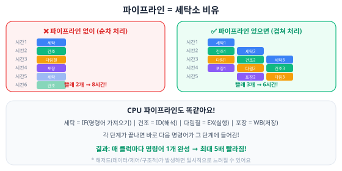
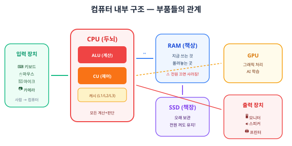
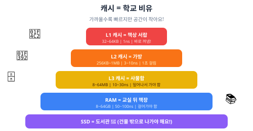
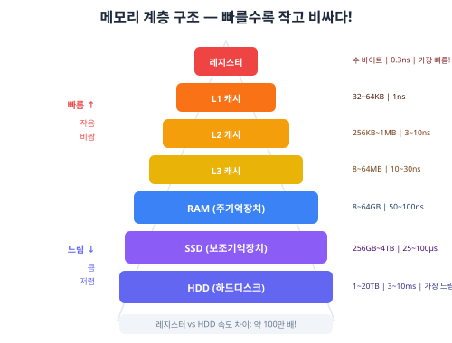
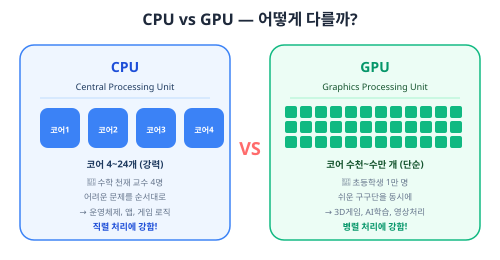
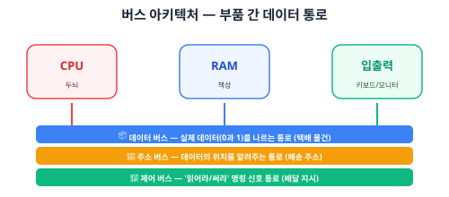

컴퓨터는 어떻게 생겼을까? (하드웨어)
📚 이번에 배울 것
- CPU, RAM, SSD/HDD의 역할을 비유로 설명할 수 있어요.
- 입력 장치와 출력 장치를 구별할 수 있어요.
- 메모리 계층 구조를 이해해요.
- [심화] CPU 파이프라인, 캐시 계층을 설명할 수 있어요.
- [심화] GPU vs CPU의 차이를 알아요.
- [심화 내용] 버스 아키텍처와 인터럽트를 이해해요.
✅ 시작 전 체크
- U0-01 '컴퓨터는 뭘 할 수 있을까?'를 읽었다
- 컴퓨터를 써 본 적이 있다
컴퓨터 안을 들여다보면

컴퓨터를 열어보면 여러 부품이 꽉 차 있어요. 각 부품은 사람의 몸에 비유하면 이해하기 쉬워요.
CPU — 컴퓨터의 두뇌
CPU(Central Processing Unit, 중앙처리장치)는 컴퓨터의 두뇌예요. 모든 계산과 판단을 여기서 해요. 1초에 수십억 번의 계산을 처리해요.
CPU 안에는 크게 두 부분이 있어요. ALU(산술논리장치)는 덧셈, 뺄셈, 비교 같은 계산을 해요. CU(제어 장치)는 명령어를 읽고 순서대로 실행시키는 지휘자예요.
클럭 속도: CPU의 심장 박동
CPU에는 클럭(clock)이라는 시계가 있어요. 이 시계가 '틱틱' 할 때마다 하나의 작업을 처리해요. 클럭 속도가 빠르면 그만큼 더 많은 일을 할 수 있어요.
• 1GHz(기가헤르츠) = 1초에 10억 번
• 3.5GHz = 1초에 35억 번
• 최신 CPU는 보통 3~5GHz
Hz(헤르츠) = 1초당 반복 횟수. 1GHz = 1,000,000,000Hz
코어: CPU 안의 두뇌 여러 개
옛날 CPU에는 두뇌가 1개였어요. 하지만 요즘 CPU에는 코어(core)라는 두뇌가 여러 개 들어 있어요.
• 쿼드코어 = 두뇌 4개 → 일 4개를 동시에
• 옥타코어 = 두뇌 8개 → 일 8개를 동시에
요리에 비유하면, 요리사(코어)가 1명일 때보다 4명일 때 요리가 더 빨리 나오죠!
[심화] CPU 파이프라인

CPU가 하나의 명령어를 처리할 때는 여러 단계를 거쳐요. 이 단계들을 겹쳐서 동시에 처리하는 기법을 파이프라인(pipeline)이라고 해요.
1. IF (Instruction Fetch) — 메모리에서 명령어 가져오기
2. ID (Instruction Decode) — 명령어 해석하기
3. EX (Execute) — 실행하기 (ALU에서 계산)
4. MEM (Memory Access) — 메모리 읽기/쓰기
5. WB (Write Back) — 결과 저장하기

| 시간 | IF | ID | EX | MEM | WB |
|---|---|---|---|---|---|
| 1 | 명령1 | - | - | - | - |
| 2 | 명령2 | 명령1 | - | - | - |
| 3 | 명령3 | 명령2 | 명령1 | - | - |
| 4 | 명령4 | 명령3 | 명령2 | 명령1 | - |
| 5 | 명령5 | 명령4 | 명령3 | 명령2 | 명령1 |
시간 5부터는 매 클럭마다 명령어 하나가 완성돼요! 파이프라인이 없으면 명령어 하나에 5클럭이 걸리지만, 파이프라인이 있으면 사실상 1클럭에 1개씩 처리하는 효과가 나요.
• 데이터 해저드: 앞 명령어의 결과가 필요한데 아직 안 나옴
• 제어 해저드: if문 같은 분기에서 다음 명령어를 모름
• 구조적 해저드: 같은 자원을 동시에 쓰려고 함
현대 CPU는 이런 문제를 해결하는 다양한 기법을 사용해요.
RAM — 컴퓨터의 책상
RAM(Random Access Memory)은 책상이에요. 지금 사용하는 프로그램과 데이터가 올라가는 곳이에요. 크기가 작아서 많은 걸 한꺼번에 올릴 수 없어요.
비휘발성 메모리: 전원 꺼져도 내용 유지 → SSD, HDD, USB
RAM은 빠르지만 휘발성, SSD는 느리지만 비휘발성이에요.
SSD/HDD — 컴퓨터의 책장
SSD(또는 HDD)는 책장이에요. 파일, 사진, 프로그램을 오래 보관하는 곳이에요. 전원을 꺼도 내용이 사라지지 않아요.

[심화] 캐시 메모리 — CPU 옆의 비밀 서랍
RAM도 CPU에 비하면 느려요. CPU가 RAM에서 데이터를 가져오는 동안 기다려야 해요. 그래서 CPU 바로 옆에 아주 빠르고 작은 메모리를 두었어요. 이게 캐시(cache)예요.
L1 캐시: 가장 빠르고 가장 작아요 (32~64KB). CPU 코어 안에 있어요.
L2 캐시: L1보다 느리지만 더 커요 (256KB~1MB). 코어마다 있어요.
L3 캐시: 가장 느리지만 가장 커요 (8~64MB). 모든 코어가 공유해요.
CPU가 데이터를 찾는 순서: L1 → L2 → L3 → RAM → SSD

[심화] 메모리 계층 구조
컴퓨터의 저장 장치는 속도와 용량이 반비례해요. 빠를수록 비싸고 작고, 느릴수록 싸고 커요. 이걸 메모리 계층 구조라고 해요.

• L1 캐시 = 3초
• L2 캐시 = 10초
• RAM = 3분
• SSD = 1시간
• HDD = 1주일
레지스터와 HDD의 속도 차이는 무려 100만 배나 돼요!
입력 장치와 출력 장치
컴퓨터에 데이터를 넣어주는 장치를 입력 장치, 결과를 보여주는 장치를 출력 장치라고 해요.
출력 장치: 모니터(화면 출력), 스피커(소리 출력), 프린터(종이 출력)
입출력 겸용: 터치스크린(입력+출력), 네트워크 카드(보내기+받기)

메인보드 — 부품들의 놀이터
메인보드(motherboard)는 모든 부품이 꽂히는 큰 기판이에요. CPU, RAM, SSD, GPU 등이 메인보드 위에 연결돼요. 부품들 사이에 데이터가 오가는 통로도 메인보드에 있어요.
전원 공급 장치 (PSU)
PSU(Power Supply Unit)는 콘센트의 220V 전기를 컴퓨터 부품이 쓸 수 있는 5V, 12V 등으로 바꿔주는 장치예요. 컴퓨터의 심장처럼 전기를 공급해요.
쿨러 — 열을 식혀주는 선풍기
CPU는 계산을 많이 하면 뜨거워져요. 너무 뜨거우면 망가질 수 있어서 쿨러(cooler)가 열을 식혀줘요. 공기 쿨러(팬)와 수냉 쿨러(물)가 있어요.
[심화] GPU — 그래픽의 마법사

GPU(Graphics Processing Unit, 그래픽처리장치)는 원래 화면에 그림을 그리기 위해 만들어졌어요. CPU와 뭐가 다를까요?
[심화] FPGA — 바꿀 수 있는 칩
FPGA(Field-Programmable Gate Array)는 사용자가 내부 회로를 프로그래밍으로 바꿀 수 있는 특수한 칩이에요.
• FPGA는 내부 논리 회로를 소프트웨어로 재구성 가능
• 특정 작업에 맞춤 설계할 수 있어서 효율적
• 사용 분야: 통신 장비, 자율주행, 반도체 설계 시제품
• CPU보다 빠르고 GPU보다 전력 효율이 좋은 경우가 많아요
[심화] 임베디드 시스템과 IoT
컴퓨터가 데스크톱이나 스마트폰만 있는 건 아니에요. 우리 주변 가전제품, 자동차, 의료기기 안에도 작은 컴퓨터가 숨어 있어요.
예시:
• 전자레인지의 타이머 컨트롤러
• 자동차의 에어백 센서
• 엘리베이터의 층 제어 시스템
• 체온계의 온도 계산기
대부분 마이크로컨트롤러(MCU)라는 작은 칩을 사용해요. 아두이노가 대표적인 예예요.
예시:
• 스마트 전구: 앱으로 켜고 끌 수 있음
• 스마트 냉장고: 음식이 떨어지면 알림
• 스마트워치: 심박수를 측정해서 앱으로 전송
• 스마트팜: 토양 수분을 측정해서 자동 급수
[심화 내용] 버스 아키텍처
컴퓨터 부품들은 서로 데이터를 주고받아야 해요. 이 데이터가 오가는 통로를 버스(bus)라고 해요.
2. 주소 버스 — 데이터의 위치(주소)를 전달하는 통로
3. 제어 버스 — '읽어라', '써라' 같은 명령 신호를 전달
비유: 택배 시스템에서
• 데이터 버스 = 택배 물건
• 주소 버스 = 배송 주소
• 제어 버스 = '배달해라', '반품해라' 같은 지시
데이터 버스의 폭이 넓을수록 한 번에 더 많은 데이터를 전달할 수 있어요. 32비트 버스는 한 번에 32비트를, 64비트 버스는 64비트를 전달해요. 도로에 차선이 많으면 차가 더 많이 다닐 수 있는 것과 같아요.
[심화 내용] 인터럽트
CPU가 열심히 계산하고 있는데, 갑자기 키보드가 눌리거나 마우스가 움직이면 어떻게 할까요? 이럴 때 사용하는 게 인터럽트(interrupt)예요.

비유: 수업 중에 학생이 손을 들고 질문하는 것!
1. 키보드 누름 → 인터럽트 발생
2. CPU가 하던 일 일시정지
3. 키보드 입력을 처리 (인터럽트 핸들러 실행)
4. 처리 완료 후 원래 하던 일로 복귀
종류: 하드웨어 인터럽트(키보드, 마우스) / 소프트웨어 인터럽트(프로그램 요청)
인터럽트: 장치가 필요할 때만 CPU에게 알리기 → 효율적!
비유: 폴링 = 1분마다 문 앞 택배 확인 / 인터럽트 = 초인종이 울리면 확인
C언어와 하드웨어 연결 미리보기
앞으로 C언어를 배우면, 이 부품들과 직접 대화하게 돼요.
→ CPU가 RAM에서 4바이트 공간을 확보하고, 그곳에 10을 저장
printf("%d", x);
→ CPU가 RAM에서 x의 값(10)을 읽어옴 → 문자 '10'으로 변환 → 모니터(출력장치)에 표시
scanf("%d", &x);
→ 키보드(입력장치)에서 입력 대기 → 사용자가 숫자 입력 → CPU가 RAM의 x 위치에 저장
x = x + 5;
→ CPU가 RAM에서 x를 캐시로 가져옴 → ALU에서 10+5=15 계산 → 결과 15를 RAM에 다시 저장
• printf() → CPU가 처리 → 모니터(출력 장치)에 표시
• scanf() → 키보드(입력 장치) → RAM에 저장
• 연산 (x + y) → CPU의 ALU에서 계산
• 파일 입출력 (fopen) → SSD/HDD에 접근
활동: 내 컴퓨터 사양 찾아보기
맥: 이 Mac에 관하여
아래 표를 채워 보세요.
CPU 이름: ______________
CPU 코어 수: ______ 개
CPU 클럭 속도: ______ GHz
RAM 크기: ______ GB
저장장치 종류: SSD / HDD (동그라미)
저장장치 용량: ______ GB
GPU 이름: ______________
화면 해상도: ______ x ______
[심화 내용] DMA (Direct Memory Access)
대량의 데이터를 SSD에서 RAM으로 옮길 때, CPU가 직접 하나하나 옮기면 너무 비효율적이에요. 그래서 DMA라는 별도 장치가 CPU 대신 데이터를 옮겨줘요.
1. CPU가 DMA 컨트롤러에게 '이 데이터 옮겨줘' 요청
2. DMA가 직접 SSD→RAM 또는 RAM→SSD 복사
3. 다 끝나면 인터럽트로 CPU에게 알림
4. 그동안 CPU는 다른 일을 할 수 있어요!
비유: 사장님(CPU)이 직접 택배를 나르는 대신 택배기사(DMA)를 고용하는 것!
소프트웨어 vs 하드웨어
지금까지 배운 건 하드웨어(hardware)예요. 손으로 만질 수 있는 물리적인 부품이죠. 하드웨어와 짝을 이루는 것이 소프트웨어(software)예요.
소프트웨어 = 악보 (연주할 곡)
아무리 좋은 피아노도 악보 없이는 음악이 안 나와요. 아무리 좋은 악보도 피아노 없이는 소용이 없어요. 둘 다 있어야 해요!
운영체제 — 하드웨어와 소프트웨어의 다리
운영체제(OS, Operating System)는 하드웨어를 관리하고 프로그램을 실행시켜주는 소프트웨어예요.
• macOS — 애플. 맥북, 아이맥에 사용
• Linux — 오픈소스. 서버, 슈퍼컴퓨터에 많이 사용
• Android — 구글. 대부분의 스마트폰
• iOS — 애플. 아이폰, 아이패드
[심화] 캐시 히트와 캐시 미스
CPU가 필요한 데이터가 캐시에 있으면 캐시 히트(cache hit), 없으면 캐시 미스(cache miss)라고 해요.
예: 100번 접근 중 95번 캐시에 있었다면 히트율 95%
히트율이 높을수록 CPU가 빨라요. 현대 CPU는 보통 95% 이상의 히트율을 달성해요.
프로그래밍할 때 데이터를 연속으로 접근하면 히트율이 올라가요. 이게 나중에 배울 배열이 빠른 이유 중 하나예요!
[심화] ARM vs x86
CPU도 종류가 있어요. 크게 x86과 ARM으로 나뉘어요.
최근에는 애플이 맥북에 ARM 기반의 M1/M2/M3 칩을 넣어서 큰 화제가 됐어요. 전력을 적게 쓰면서도 성능이 뛰어나거든요.
컴퓨터 조립 순서 알아보기
━━━ 연습문제 ━━━
연습문제
CPU, RAM, SSD를 사람에 비유하면 각각 무엇인가요?
다음 중 입력 장치는 O, 출력 장치는 X로 표시하세요.
(1) 키보드 ( )
(2) 모니터 ( )
(3) 마우스 ( )
(4) 스피커 ( )
(5) 마이크 ( )
전원을 끄면 내용이 사라지는 부품은 무엇인가요? 왜 '책상'에 비유했는지 설명해 보세요.
클럭 속도 3GHz는 1초에 몇 번 '틱'하는 것인가요?
쿼드코어 CPU는 코어가 몇 개인가요? 듀얼코어와 비교하면 어떤 장점이 있나요?
게임을 실행하면 컴퓨터 안에서 어떤 일이 일어날까요? CPU, RAM, SSD, GPU, 모니터의 역할을 순서대로 설명해 보세요.
SSD와 HDD의 차이점을 3가지 이상 적어 보세요.
메모리 계층 구조에서 레지스터, 캐시, RAM, SSD를 빠른 순서대로 나열하세요.
CPU와 GPU의 가장 큰 차이점은 무엇인가요? 각각 어떤 작업에 적합한지 설명해 보세요.
일상에서 찾을 수 있는 임베디드 시스템 3가지를 적어 보세요.
[심화] CPU 파이프라인의 5단계를 순서대로 적고, 파이프라인의 장점을 설명해 보세요.
[심화] L1, L2, L3 캐시의 차이를 크기, 속도, 위치 측면에서 비교해 보세요.
[심화] '파이프라인 해저드'가 무엇인지 설명하고, 데이터 해저드의 예를 하나 들어 보세요.
[심화 내용] 버스의 3가지 종류(데이터, 주소, 제어)를 적고, 각각의 역할을 택배 비유로 설명해 보세요.
[심화 내용] 인터럽트와 폴링의 차이점을 설명하고, 인터럽트가 더 효율적인 이유를 적어 보세요.
정답
정답
용어 정리
━━━ 10축 심화 학습 ━━━
[KOI] 하드웨어 관련 실전 기출 유형
RAM, L1 캐시, SSD, 레지스터, HDD, L3 캐시
정답: 레지스터 → L1 캐시 → L3 캐시 → RAM → SSD → HDD
풀이: 외우는 법 — '레엘엘램에하'
CPU에 가까울수록 빠르고, 멀어질수록 느려요.
레지스터와 HDD의 속도 차이는 약 100만 배예요!
(1) RAM (2) SSD (3) 캐시 메모리 (4) 레지스터 (5) HDD (6) USB 메모리
정답: (1) RAM, (3) 캐시 메모리, (4) 레지스터
풀이:
• 휘발성(전원 끄면 사라짐): RAM, 캐시, 레지스터 — 전부 CPU나 메인보드 위에서 '임시' 저장
• 비휘발성(전원 꺼도 유지): SSD, HDD, USB — '영구' 저장용
• 함정: 캐시도 RAM처럼 휘발성이에요! 많이 틀리는 문제!
정답: 14클럭
풀이:
• 파이프라인 없이: 10 × 5 = 50클럭 필요
• 파이프라인으로: 처음 채우는 데 4클럭 + 이후 10클럭 = 14클럭
• 공식: (파이프라인 단계 수 - 1) + 명령어 수 = (5-1) + 10 = 14
• 50클럭 → 14클럭, 약 3.6배 빨라짐!
[KOI 실전] 다음 중 CPU의 ALU가 하는 일이 아닌 것은? (1) 두 수의 덧셈 (2) 두 수의 크기 비교 (3) 메모리에서 명령어 읽기 (4) AND, OR 논리 연산 정답을 고르고 이유를 적으세요. (힌트: 명령어를 읽는 건 어떤 장치의 역할인가요?)
[디버깅] 하드웨어 관련 에러 구별하기
프로그래밍 에러뿐 아니라, 하드웨어 문제로 생기는 에러도 있어요. 이걸 구별하는 건 디버깅의 첫 단계예요.
• 모든 프로그램이 갑자기 느려짐 → RAM 부족 (작업관리자에서 확인)
• 컴퓨터가 갑자기 꺼짐 → 과열 (쿨러 문제) 또는 전원 문제
• 화면이 깜빡이거나 깨짐 → GPU 과열 또는 드라이버 문제
• 저장한 파일이 깨짐 → SSD/HDD 불량
• 블루스크린(BSOD) → RAM 불량 또는 드라이버 충돌
소프트웨어 에러 의심 상황:
• 특정 프로그램만 멈춤 → 그 프로그램의 버그
• 특정 입력에서만 오류 → 코드 논리 에러
• 컴파일 안 됨 → 문법 에러
[디버깅] 다음 상황이 하드웨어 문제인지 소프트웨어 문제인지 구별하세요: (1) 게임만 실행하면 컴퓨터가 꺼진다 (2) 모든 프로그램에서 한글이 깨져서 나온다 (3) 컴퓨터 시작할 때 '삐' 소리가 3번 나고 화면이 안 나온다 (4) 내가 만든 C프로그램에서 특정 값을 입력하면 결과가 틀리게 나온다 (5) 한 달 전에 저장한 사진 파일이 열리지 않는다
[코딩기초] 변수 = RAM의 공간
C언어에서 int x = 10;이라고 쓰면, RAM에 4바이트 공간이 만들어지고 거기에 10이 저장돼요. 이게 바로 변수예요.
char c = 'A'; → RAM에서 1바이트 사용 (글자 1개)int x = 100; → RAM에서 4바이트 사용 (정수)float f = 3.14; → RAM에서 4바이트 사용 (소수점)double d = 3.14159; → RAM에서 8바이트 사용 (정밀 소수점)RAM 8GB = 약 80억 바이트 = int 변수를 약 20억 개 만들 수 있어요!
Part 2에서 이 자료형들을 직접 사용해 볼 거예요.
[컴퓨팅사고력] 추상화 실습 — 컴퓨터를 비유로 이해하기
이 유닛에서 CPU를 '두뇌', RAM을 '책상', SSD를 '책장'으로 비유했어요. 복잡한 것을 핵심만 뽑아서 단순하게 표현하는 것 — 이것이 컴퓨팅사고력의 추상화예요.
[컴퓨팅사고력] GPU를 일상의 무언가에 비유해 보세요. (1) 비유 대상을 정하세요 (2) GPU의 어떤 특징(코어 수천 개, 병렬 처리, 단순 계산에 강함)이 그 비유와 맞는지 설명하세요 (3) 비유의 한계(맞지 않는 점)도 한 가지 적으세요
[C언어] sizeof로 변수 크기 직접 확인하기
C언어에는 변수가 RAM에서 몇 바이트를 차지하는지 알려주는 sizeof라는 도구가 있어요. 직접 확인해 보세요!
| 1 | #include <stdio.h> |
| 2 | |
| 3 | int main(void) { |
| 4 | printf("char: %lu바이트\n", sizeof(char)); |
| 5 | printf("int: %lu바이트\n", sizeof(int)); |
| 6 | printf("float: %lu바이트\n", sizeof(float)); |
| 7 | printf("double: %lu바이트\n", sizeof(double)); |
| 8 | |
| 9 | // RAM 8GB로 int 몇 개 만들 수 있을까? |
| 10 | long long ram_bytes = 8LL * 1024 * 1024 * 1024; // 8GB |
| 11 | printf("\nRAM 8GB = %lld바이트\n", ram_bytes); |
| 12 | printf("int 변수 최대 %lld개 가능!\n", ram_bytes / sizeof(int)); |
| 13 | return 0; |
| 14 | } |
[KOI] 추가 실전 문제 — 캐시와 성능
정답: 92%
풀이:
• 캐시 히트율 = (캐시에서 찾은 횟수 ÷ 전체 접근 횟수) × 100
• = (92 ÷ 100) × 100 = 92%
• 현대 CPU는 보통 95% 이상의 히트율을 달성해요
• 히트율이 높을수록 CPU가 RAM까지 기다리지 않아서 빨라요!
정답: 4번
풀이:
• 32비트 버스 = 한 번에 32비트(4바이트) 전달 가능
• 128비트 ÷ 32비트 = 4번 접근 필요
• 이것이 64비트 USB가 32비트보다 2배 빠른 이유!
• 도로 비유: 4차선 도로보다 8차선 도로가 차를 더 많이 통과시키죠
(1) 데이터를 암호화하기 위해
(2) CPU가 다른 일을 하는 동안 데이터를 전송하기 위해
(3) RAM의 용량을 늘리기 위해
(4) 캐시의 속도를 높이기 위해
정답: (2)
풀이:
• DMA 없이: CPU가 직접 SSD→RAM 데이터 복사 (그동안 다른 일 못 함!)
• DMA 있으면: DMA 컨트롤러가 복사 담당, CPU는 자유롭게 계산!
• 비유: 사장님(CPU)이 직접 택배 나르기 vs 택배기사(DMA) 고용
• 다 끝나면 DMA가 인터럽트로 CPU에게 '끝났어요!' 보고
(가) 키보드 입력을 처리하는 핸들러 실행
(나) CPU가 하던 작업(프로그램 A)의 상태 저장
(다) 인터럽트 신호 감지
(라) 프로그램 A로 복귀하여 이어서 실행
정답: (다) → (나) → (가) → (라)
풀이:
1. 키보드 눌림 → 인터럽트 신호 감지 (다)
2. CPU가 프로그램 A의 현재 위치와 레지스터 값을 저장 (나) — '여기까지 했어' 표시
3. 키보드 입력을 처리하는 인터럽트 핸들러 실행 (가)
4. 처리 완료 후 저장해둔 상태를 복원하여 프로그램 A 이어서 실행 (라)
[KOI] 4단계 파이프라인 CPU에서 20개의 명령어를 실행하려면 총 몇 클럭이 필요한가요? 공식을 적용하여 풀이과정도 적으세요. (파이프라인 없을 때와 비교하여 몇 배 빨라지는지도 계산하세요)
[KOI] CPU가 데이터를 500번 요청했는데, L1에서 400번, L2에서 60번, L3에서 30번, RAM에서 10번 찾았습니다. (1) 전체 캐시 히트율은 몇 %인가요? (2) L1 히트율만 따로 계산하면 몇 %인가요? (3) 왜 L1 히트율이 높을수록 좋은지 설명하세요.
[C+하드웨어] C언어에서 int arr[1000000]; (100만 개짜리 int 배열)을 선언하면 RAM을 몇 바이트 사용하나요? 이것을 MB(메가바이트)로 변환하세요. (1MB = 1,048,576바이트)
[실생활] GPU가 바꾸고 있는 세상
GPU는 게임을 넘어서 우리 생활 곳곳을 변화시키고 있어요.
2. 자율주행: 차 주변 카메라 8대의 영상을 실시간으로 분석 — GPU 없이는 불가능
3. 의료 영상: CT/MRI 이미지를 GPU로 분석해서 종양을 자동 감지
4. 가상화폐: 비트코인 채굴에 GPU 대량 사용 → GPU 가격 폭등 사태(2021년)
5. 영화 VFX: 마블 영화의 3D 특수효과를 수천 대의 GPU로 렌더링
NVIDIA 창업자 젠슨 황은 '세상에서 가장 중요한 칩은 GPU'라고 말했어요.
GPU 덕분에 AI 시대가 열렸다고 해도 과언이 아니에요!
[KOI] 메모리 계층 순서, 휘발성/비휘발성 구별, 파이프라인 클럭 계산, 캐시 히트율, 데이터 버스 폭, DMA 역할, 인터럽트 처리순서. 실전 문제 7개+풀이
[디버깅] 하드웨어 에러(과열/RAM부족/SSD불량/블루스크린) vs 소프트웨어 에러(버그/문법/논리) 구별법
[C언어] sizeof로 자료형 크기 확인. int/char/float/double과 RAM 크기 관계. 100만개 배열 메모리 계산
[컴퓨팅사고력] 추상화 — 복잡한 부품을 비유로 단순화. GPU 비유 만들기 실습
[코딩기초] 변수 = RAM 공간. 자료형별 메모리 크기. sizeof 코드 미리보기
[실생활] AI/자율주행/의료/가상화폐/영화 — GPU가 바꾸고 있는 세상 5가지
해결법: 탭을 닫거나, RAM을 추가로 장착하거나, 메모리 적게 쓰는 프로그램으로 바꾸세요.